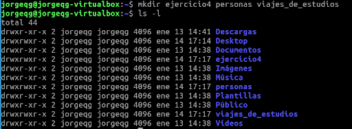
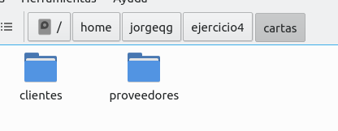
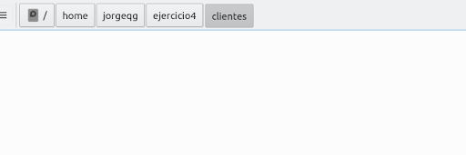

Título
Práctica Sistemas de archivos Linux Ubuntu (I)
Jorge Quintana González 1ºDAM
Índice
Introducción
Ir al índice
En este proyecto haremos unos ejercicios donde trabajemos algunos comandos de Linux.
Objetivo de la memoria
Ir al índice
Aprender a desenvolvernos en el sistema de archivo de Linux y algunos comandos.
Material utilizado
Ir al índice
-
Ordenador del centro educativo
-
Ordenador personal
-
Oracle VM VirtualBox
-
ISO de lubuntu 20.04
Desarrollo:
Ir al índice
1. Crea a partir de tu directorio personal (Carpeta personal = /home/)
y desde el terminal, la estructura de directorios de la imagen.

2. Crea en el directorio “/home//ejercicio4/Cartas/Documentos”
y desde el terminal los siguientes ficheros vacíos “apuntes1.txt”, “apuntes1.doc”, “apuntes1.pdf”, “apuntes2.pdf”, “apuntes2.txt” ,
“apuntes3.pdf”, “apuntes4.txt”, “apuntes4.pdf” , “apuntes4.dat” y “notas.txt”.
3. Renombra la carpeta “/home//ejercicio4/Viajes de estudios” y llámala “Clientes”.
4. Situado en “/home//ejercicio4/Cartas” elimina la carpeta “/home//ejercicio4/personas”.
5. Mueve la carpeta “/home//ejercicio4/Cartas/Documentos” para que cuelgue del directorio “/home//ejercicio4/”.
6.Muestra gráficamente cómo ha quedado la estructura de directorios (sólo directorios) después de todos estos cambios.


7. Sitúate en el directorio “/home//ejercicio4/Documentos” y desde el terminal responde a las siguientes preguntas.
- Lista todos los archivos que llevan al menos una “a” y acaban en .txt
- Lista todos los archivos que llevan un 4 y acaban en .pdf ó en .txt
- Lista todos los archivos acabados en “.pdf” mostrando a la vez el resultado por pantalla y en un fichero llamado resultado.txt
Problemas encontrados en cada actividad, solución y/o sugerencias
Ir al índice
Creé los directorios "viajes_de_estudio" y "personas" fuera de ejercicio4, en vez de dentro. Al darme cuenta del error lo corregí.
Conclusión
Ir al índice
Han sido unos buenos ejercicios para prácticar nuestros primeros comandos en Linux. Personalmente, me sigue resultando un poco
confuso algunas pantallas del comando man, pero supongo que es cuestión de acostumbrarse.